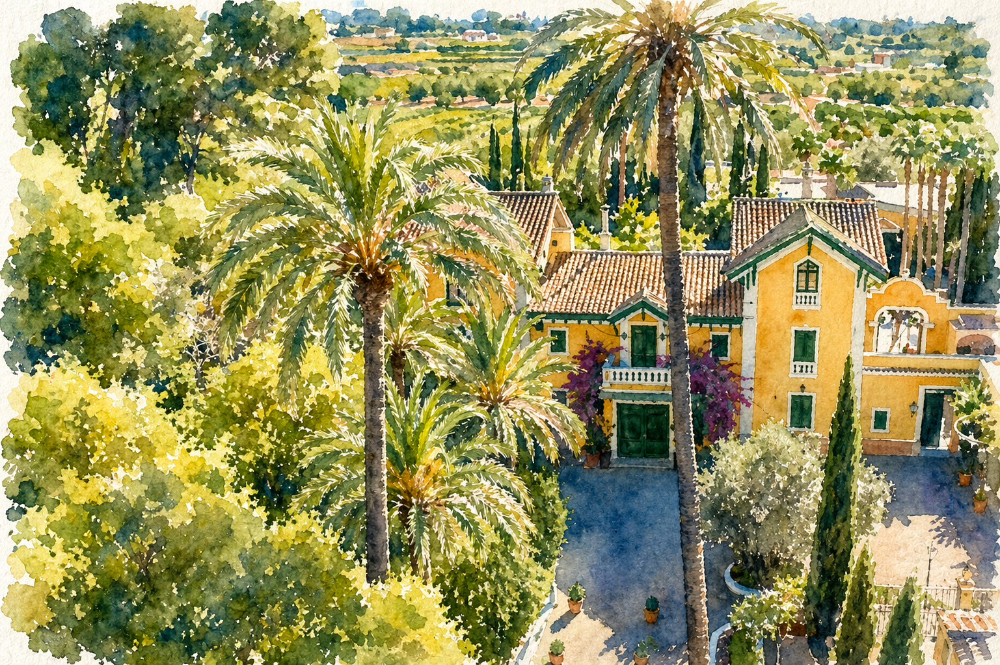
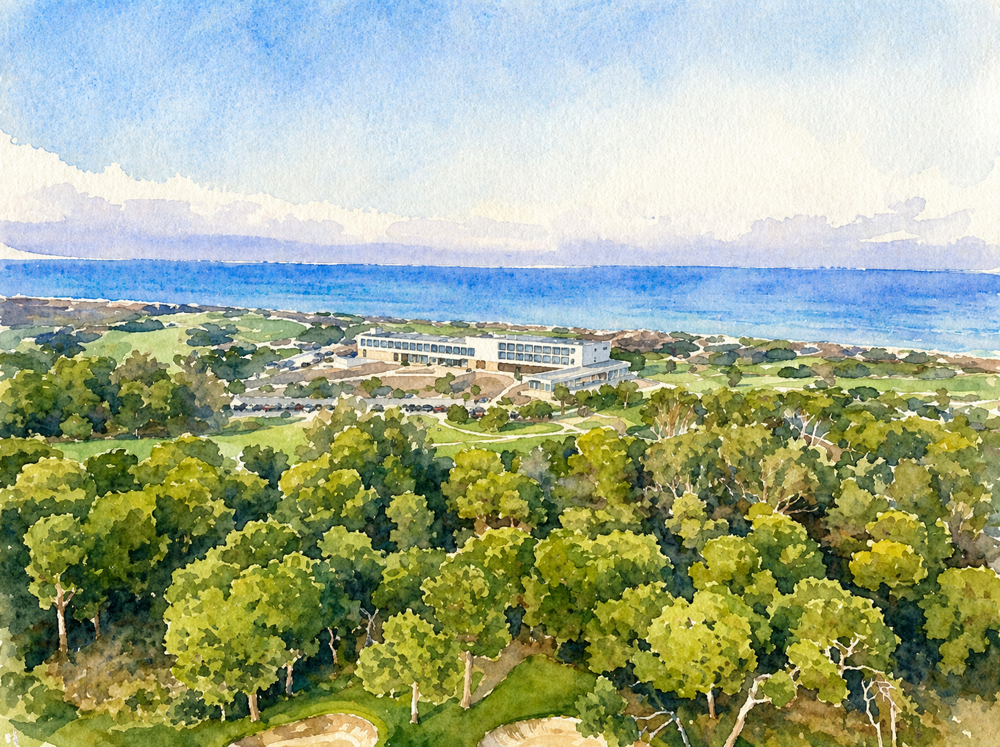
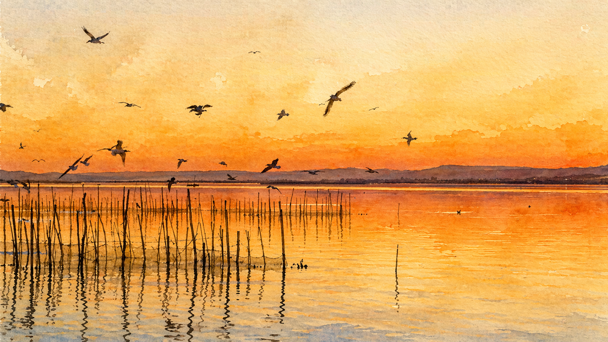
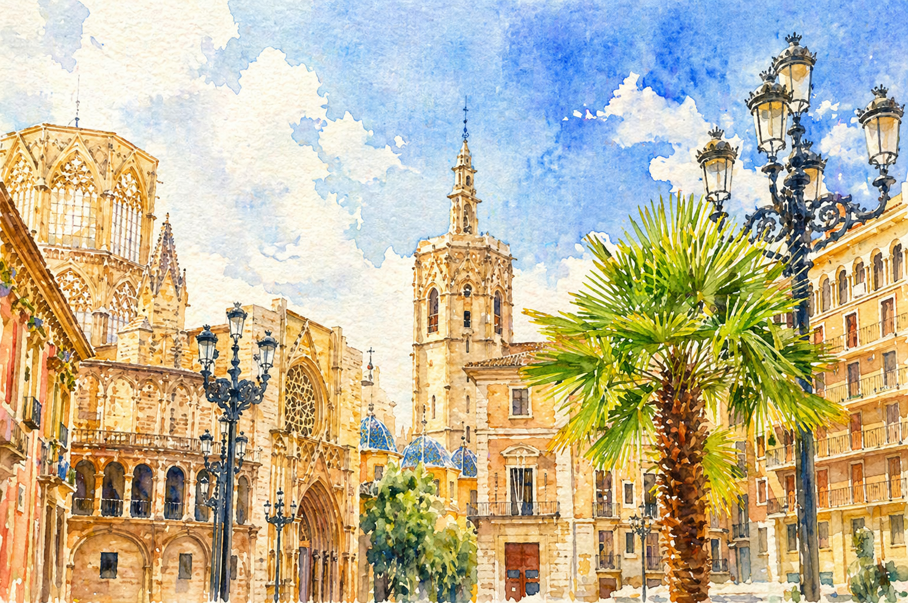
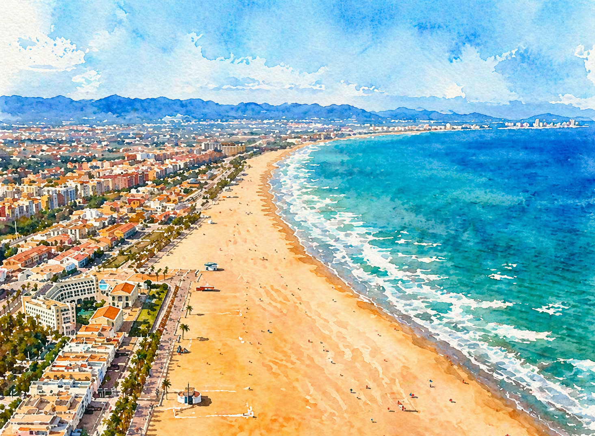

About Valencia
The places behind the weekend
A closer look at the places that will shape the celebration and the setting around it.

About Masia Xamandreu
Masía Xamandreu
We have booked the entire Masía and this is where we will hold the ceremony and the celebration, followed by a gala dinner in its gardens.

El Saler
El Parador El Saler
El Parador El Saler is located inside the UNESCO World Heritage natural reserve of L’Albufera, and we have booked the entire hotel for the wedding weekend.
During the weekend we will enjoy facilities such as its golf resort and its direct and private beach access.

L’Albufera
L’Albufera
L’Albufera is one of the biggest rice-growing areas in Europe, and it is in this landscape that paella was originally invented.

Valencia city center
Valencia city center
Valencia is a historical city with layers of architecture shaped in part by its Arab past, alongside grand avenues, elegant buildings and Mediterranean light.

Cabanyal
El Cabanyal
El Cabanyal was historically Valencia’s fishermen’s district, and it still preserves that maritime spirit today.